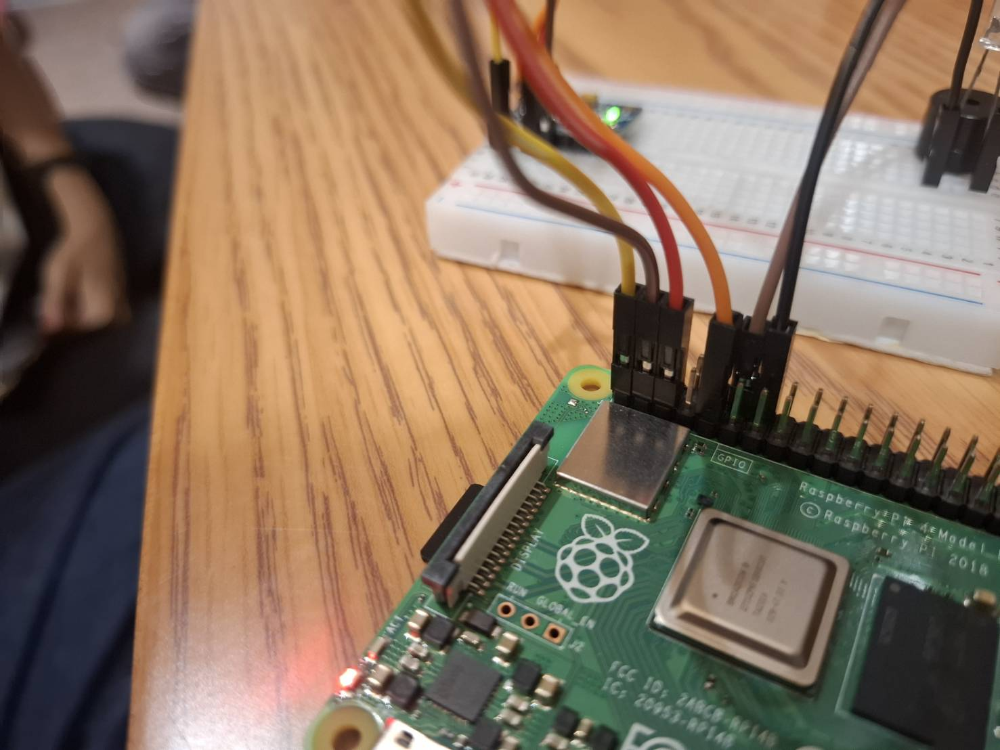
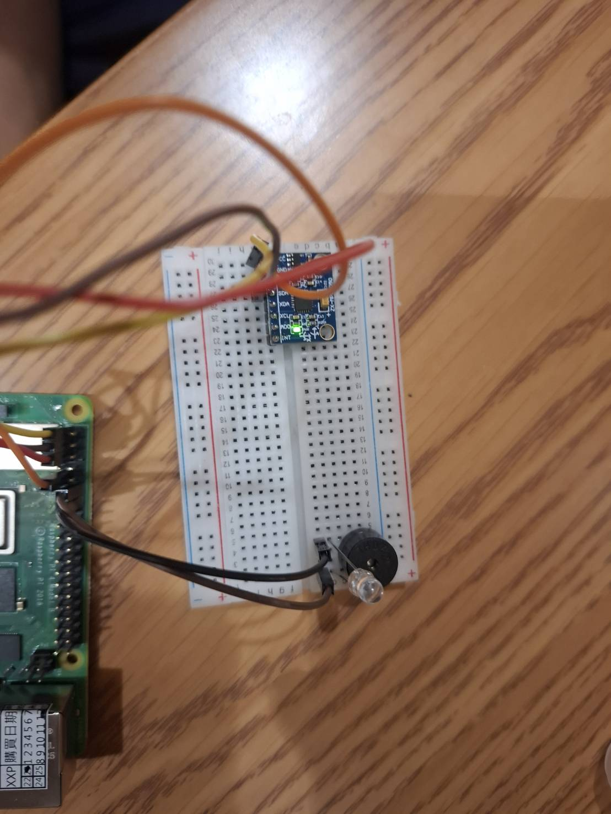
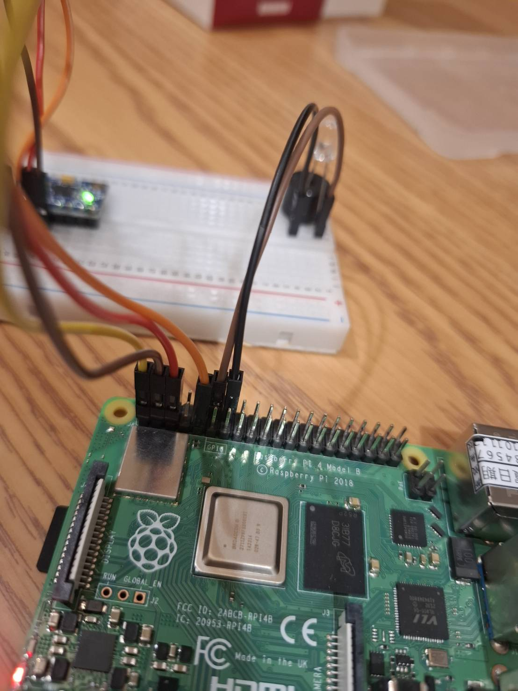
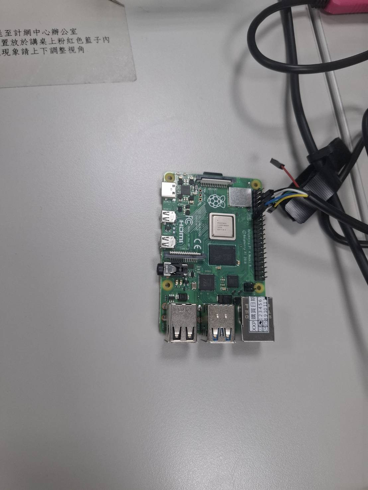
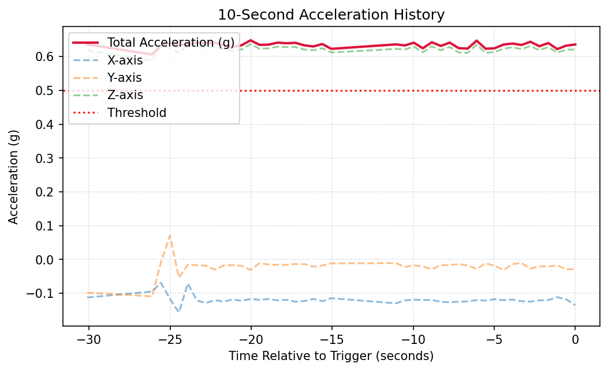
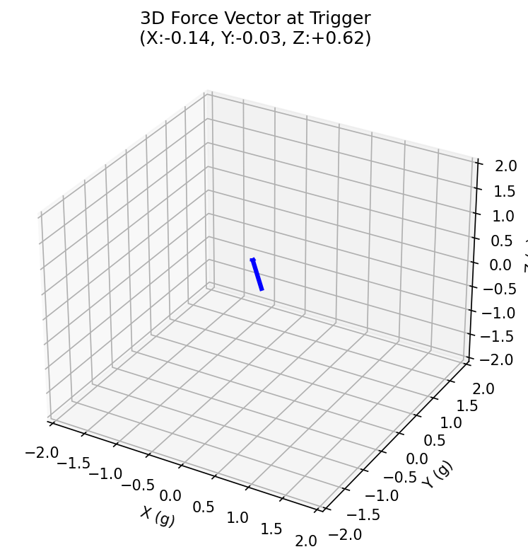
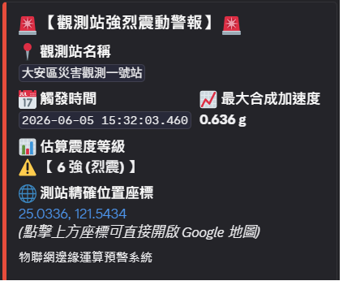

基於樹莓派之地震學監測與物聯網邊緣運算預警系統
MobaXterm 中的 SSH 可以連接網路，利用 Raspberry Pi 的 USB 接頭連接手機網路後，即可進行遠端無線操作，免去外接螢幕與鍵盤的繁瑣設定。
電路板與麵包板的接線方式如下：電路板連接電源輸出（VCC）和接地線（GND，以避免硬體燒焦毀損）；電路板上搭載的感測器負責感應三軸加速度，並即時將感測訊息傳遞給 Raspberry Pi。麵包板端則連接了 LED 燈與蜂鳴器，當檢測器感應到劇烈晃動時，訊息傳遞至 Raspberry Pi 進行運算，再將感應結果輸出至 LED 燈與蜂鳴器，實作出類似地震發出警報的功能。




本系統與 MobaXterm 及自動化腳本結合，具備連接 Discord 的即時通報功能。利用此特性，使用 Python 撰寫即時警報通知程式，當晃動觸發門檻時能即時傳送警告訊息至 Discord 頻道，並自動上傳視覺化繪圖。



以下為樹莓派感測器於實地測試中，晃動觸發、警報響起以及 Discord 即時推送通報的實際操作與示範影片。